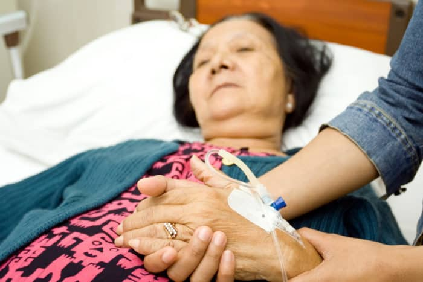
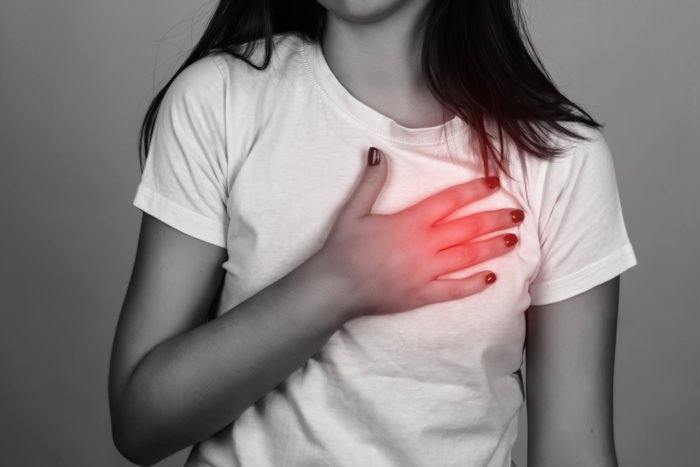
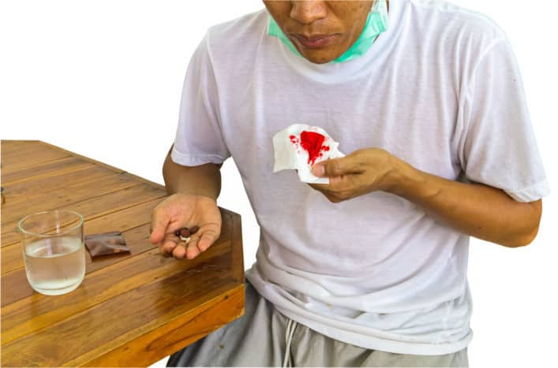
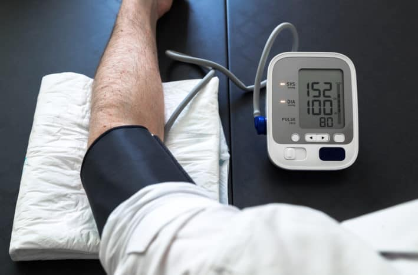

Penyakit Mematikan di Indonesia
Stroke
Berdasarkan hasil survei Sample Registration System (SRS) Indonesia tahun 2014, stroke merupakan penyakit paling mematikan nomor satu yang ada di Indonesia. Sebanyak 21,1 persen kasus stroke berakhir pada kematian dalam satu tahun terakhir.
Stroke adalah gangguan fungsi saraf dan perdarahan yang terjadi pada pembuluh darah otak secara mendadak, cepat, dan terus bertambah parah. Hal ini menimbulkan gejala berupa kelumpuhan wajah dan anggota badan, bicara tidak lancar dan tidak jelas, gangguan penglihatan, dan sebagainya.
Dilihat dari hasil Riset Kesehatan Dasar tahun 2013, kejadian stroke banyak terjadi mulai usia 45 tahun ke atas. Namun, kasus stroke tertinggi terjadi pada kelompok umur 75 tahun ke atas sebesar 67 persen.
Meski masih berusia muda, bukan berarti Anda bisa terbebas dari risiko penyakit stroke. Terlebih jika Anda tergolong dalam kelompok berisiko, seperti memiliki berat badan berlebih atau obesitas, hobi konsumsi alkohol, punya masalah kolesterol tinggi, dan sebagainya.
Maka itu, jaga pola hidup sehat dan lakukan pemeriksaan rutin untuk memastikan kondisi tubuh Anda tetap sehat.
Penyakit Jantung Koroner
Penyakit jantung koroner merupakan salah satu penyakit tidak menular yang terjadi akibat pola hidup dan lingkungan yang tidak sehat. Misalnya kebiasaan makan makanan tinggi lemak jenuh, minum alkohol, merokok, obesitas, dan sebagainya.
Dilihat dari Pusat Data dan Informasi milik Kementerian Kesehatan RI tahun 2013, jumlah kasus penyakit jantung koroner di Indonesia terus meningkat sebanyak 7 sampai 12,1 persen dari total penduduk Indonesia. Penyakit jantung koroner banyak ditemukan pada kelompok dewasa dan usia lanjut, yaitu umur 45-54 tahun (2,1 persen), 55 sampai 64 tahun (2,8 persen), dan 65-74 tahun (3,6 persen).
Karena angka kasus penyakit jantung koroner terus meningkat, pemerintah mengimbau masyarakat untuk memegang pedoman CERDIK. CERDIK terdiri dari cek kesehatan secara berkala, enyahkan asap rokok, rajin beraktivitas fisik, diet yang sehat dan seimbang, istirahat yang cukup, dan kelola stres. Langkah-langkah ini dapat membantu Anda terhindar dari faktor risiko penyakit jantung koroner sejak dini.
Diabetes Melitus

Berdasarkan data WHO tahun 2013, diabetes melitus menyumbang 6,5 persen kematian pada penduduk Indonesia. Tidak hanya orang dewasa, anak-anak dan remaja pun bisa terkena diabates. Pasalnya, Pusat Data dan Informasi milik Kemenkes tahun 2013 mengungkapkan bahwa jumlah penduduk usia 15 tahun ke atas mencapai angka 1,5 sampai 2,1 persen. Bahkan, diperkirakan angka ini terus meningkat setiap tahunnya.
Oleh karena itu, cegah diabetes sejak dini dengan membatasi asupan gula dan rutin olahraga. Jangan lupa cek gula darah setiap hari untuk menjaga kadar gula darah Anda tetap normal.
Tuberkulosis
TBC merupakan penyakit infeksi menular yang disebabkan oleh kuman TB (Mycobacterium tuberculosis) yang masuk melalui pernapasan. Gejala utama tuberkulosis berupa batuk dua minggu atau lebih, batuk disertai dahak bercampur darah, sesak napas, nafsu makan menurun, dan demam lebih dari satu bulan.
Tuberkulosis termasuk penyakit paling mematikan di Indonesia pada posisi keempat. Pasalnya, menurut data dari WHO tahun 2014, jumlah kematian akibat TBC terus meningkat, bahkan diperkirakan lebih dari 100.000 kasus setiap tahunnya.
Sebetulnya, TBC dapat disembuhkan sepenuhnya asalkan Anda minum obat TBC secara rutin. Obat ini harus terus diminum selama 6 sampai 12 bulan untuk mencegah pertumbuhan bakteri penyebab TBC.
Komplikasi Hipertensi
Hipertensi merupakan salah satu faktor risiko penyakit jantung yang ditandai dengan peningkatan tekanan darah di atas ambang normal atau lebih dari 120/80 mmHg. Jika dibiarkan terus naik, penyakit hipertensi ini dapat mengganggu fungsi organ lain seperti jantung dan ginjal, yang kemudian memicu komplikasi.
Hipertensi bukan penyakit yang bisa disepelekan. Pasalnya, menurut Pusat Data dan Informasi Situasi Kesehatan Jantung milik Kemenkes, komplikasi hipertensi menyebabkan sekitar 9,4 persen kematian di seluruh dunia setiap tahunnya. Hipertensi menyebabkan sekitar 45 persen kematian akibat penyakit jantung dan 51 persen kematian akibat stroke.
Kasus hipertensi yang terjadi di Indonesia paling banyak disebabkan karena kebiasaan makan makanan tinggi lemak jenuh dan garam. Maka itu, batasi jenis makanan tersebut dan periksa tekanan darah Anda secara rutin untuk mencegah kemungkinan hipertensi sedini mungkin.
Dengan mendeteksi risiko hipertensi sejak dini, Anda dapat terhindar dari risiko serangan jantung, gagal jantung, stroke, dan gagal ginjal. Tanda-tanda hipertensi antara lain badan lemas, sakit kepala parah, mimisan, jantung berdebar-debar, dada sakit, serta gangguan penglihatan.